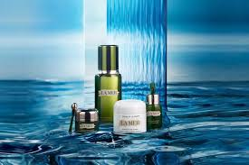
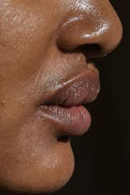

Top Skincare Myths You Should Stop Believing
Myth 1: Natural Ingredients Are Always Better

While natural ingredients can be beneficial, it's a misconception that they're always safer or more effective. Poison ivy is natural—but harmful. Similarly, essential oils like citrus or lavender can cause skin irritation or photosensitivity in some individuals. Meanwhile, lab-created ingredients such as hyaluronic acid or niacinamide are often more stable, tested, and backed by dermatological research. “Natural” is not a guarantee of gentleness or suitability. Always focus on how your skin reacts to a product and consider patch testing. Reading ingredient lists and consulting a dermatologist or AI skin advisor like Derma Hub ensures you're using what’s truly right for your skin.
Myth 2: You Don’t Need Sunscreen on Cloudy Days
Up to 80% of the sun’s harmful UV rays can still penetrate clouds, meaning your skin remains at risk even when it's overcast. This myth often leads people to skip daily SPF application, which accelerates skin aging, worsens hyperpigmentation, and increases the risk of skin cancer. UVA rays, responsible for aging, are present year-round and can even pass through windows. Sunscreen isn’t just for sunny beach days — it should be part of your daily routine like brushing your teeth. Derma Hub recommends using a broad-spectrum SPF 30 or higher every morning, rain or shine, to protect your skin long-term.
Myth 3: Expensive Products Are More Effective
While premium packaging and luxury branding can drive prices up, the effectiveness of a skincare product lies in its ingredients and formulation—not its price tag. Drugstore brands often use the same active ingredients as high-end products but at a fraction of the cost. For example, a $10 niacinamide serum can be just as effective as a $100 one. Don’t fall for the “price equals quality” myth. Always check the ingredient list, percentage of actives, and whether clinical testing has been done. With Derma Hub, we help users compare products by efficacy, not price, ensuring accessibility without sacrificing results.
Myth 4: Oily Skin Doesn’t Need Moisturizer
It might seem logical to skip moisturizer if your face already feels oily, but doing so can actually worsen the problem. When your skin is dehydrated, it overcompensates by producing even more oil, leading to clogged pores and breakouts. Moisturizers help maintain your skin’s barrier and balance hydration. The key is to choose the right type—look for lightweight, non-comedogenic, oil-free formulations. Gel-based moisturizers with ingredients like glycerin or hyaluronic acid work well for oily skin types. Derma Hub’s smart AI routine builder can match you with optimal products that hydrate without heaviness, helping your skin regulate its natural oil levels better.